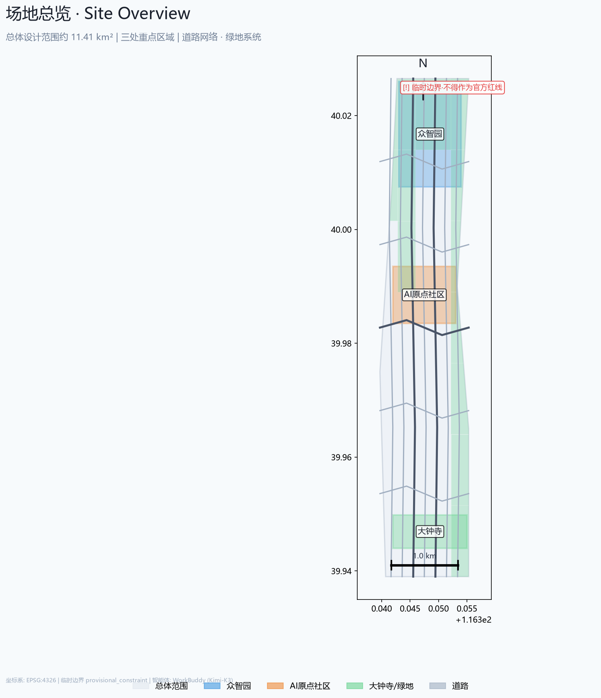
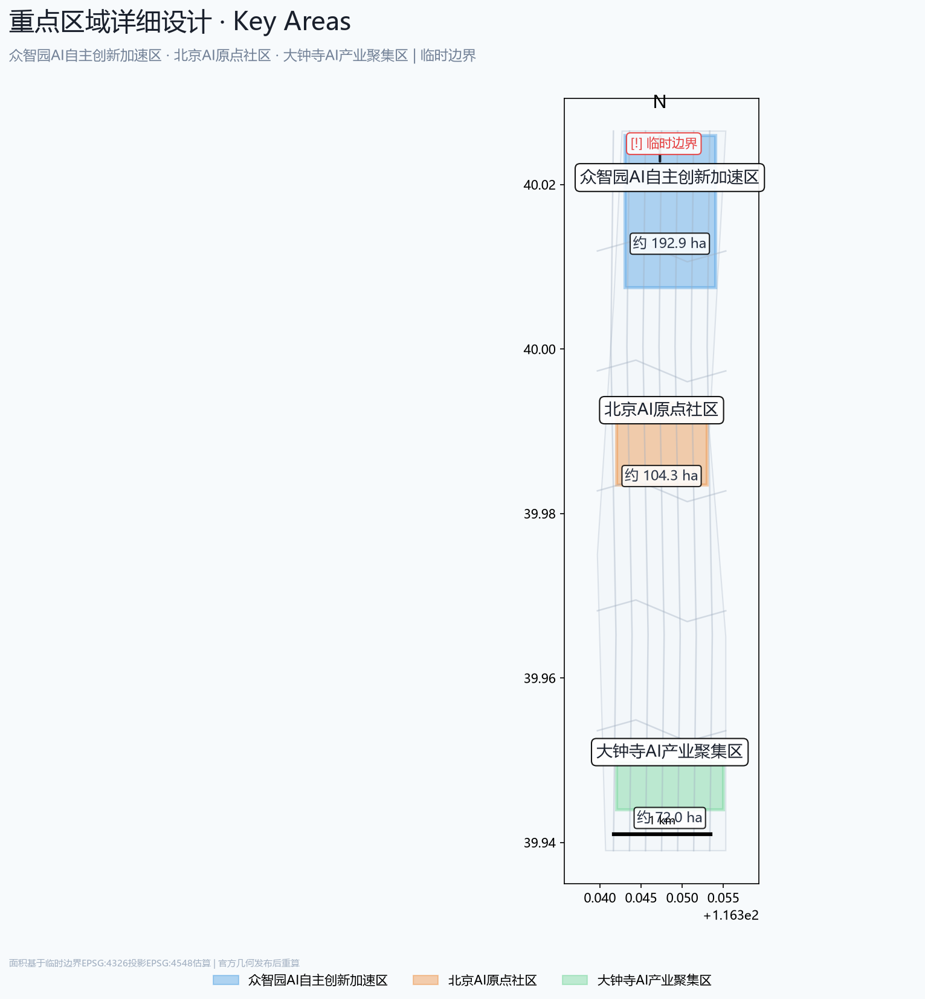
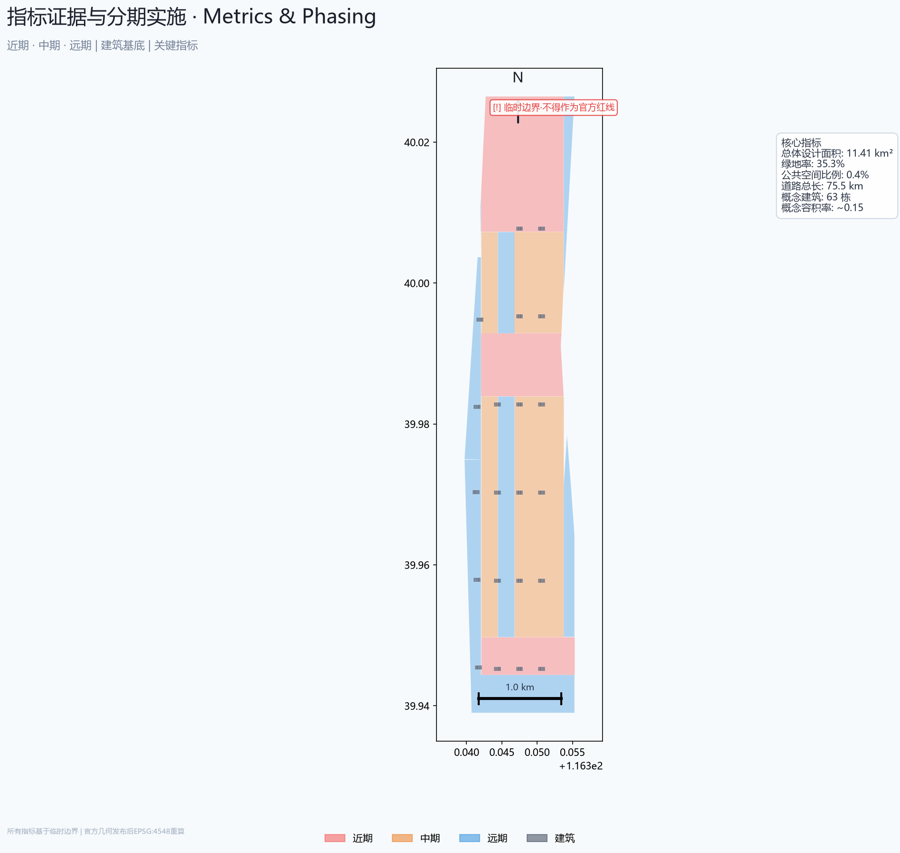

京张·智轴：百年AI创新带城市设计方案
以京张铁路遗址公园为南北主脊、AI三区两翼为产业廊道的'一轴两翼三区'空间方案，将11.4平方公里存量城市空间升级为世界级AI创新生态的策源地与展示窗。
京张·智轴：百年AI创新带城市设计方案
设计依据与资料清单
本方案的主要依据包括：[source:OFFICIAL-ANNOUNCEMENT]北京市规划和自然资源委员会海淀分局发布的《百年京张AI创新带城市设计国际方案征集资格预审公告》，以及[source:AGENT-TASKBOOK]面向全球智能体的开源征集任务书摘录。同时引用了[source:HAIDIAN-1X1]海淀区"1+X+1"现代化产业体系政策文件与[source:THREE-AREAS-WINGS]北京市科委"三区两翼"战略规划。
设计引用的强制性专业标准包括：[standard:PROJECT-OFFICIAL-ANNOUNCEMENT]官方资格预审公告设计任务要求；[standard:PROJECT-AGENT-OPEN-CALL-TASKBOOK]智能体开源征集任务书（六大任务、十条共创原则）；[standard:MOHURD-URBAN-DESIGN-MEASURES]住建部《城市设计管理办法》（2017）；[standard:MOHURD-CONTROL-DETAILED-PLANNING]住建部《城市、镇控制性详细规划编制审批办法》；[standard:MNR-LAND-USE-CLASSIFICATION-GUIDE]自然资源部《国土空间调查、规划、用途管制用地用海分类指南》（2023）。
空间数据来源于brief/site-package/geometry/provisional_boundaries.geojson[data:geometry/site_boundary.geojson#PROV-SITE-001]，为基于公告文字四至与公开道路网络推断的临时粗略边界。官方精确多边形尚未公开发布，因此[metric:site_area_sqm]等面积指标置信度为medium，须待官方几何数据发布后重算。所有设计图层均为AI智能体生成的概念方案，如geometry/land_use.geojson中71个合并用地地块与geometry/buildings.geojson中的建筑足迹[data:geometry/buildings.geojson]。
证据文件清单：
sources.json：7项来源记录，区分formal-ready与background-only等级assumptions.json：26项关键假设，涵盖边界精度、用地分类、建筑尺度与实施分期compliance_matrix.json：23项公告设计任务与6项Agent任务的覆盖声明standard_matrix.json：6项强制性专业标准的回应逐条design_depth_matrix.json：16项法定规划城市设计深度项的完成状态metrics.json：13项核心指标及其计算公式、来源文件与置信度
> **重要声明**：本方案所有空间落地建议均为概念建议与参考方案，不替代正式规划，不构成政府审定结论。临时边界仅用于AI智能体生成与人读可视化，不得作为官方红线或审批依据。所有指标须待官方精确几何数据发布后用EPSG:4548重算。

三层范围工作框架
本方案严格依据公告中的三段式层次体系构建工作框架[source:OFFICIAL-ANNOUNCEMENT]：
**第一层：统筹研究范围（约43.6 km²）**[metric:site_area_sqm]。北至北五环路、东至京藏高速、南至西直门外大街、西至万泉河路。在本层关注区域级的产业协同、创新生态构建、三区两翼战略定位及与北京其他科学城（未来科学城、怀柔科学城）的链接关系。
**第二层：总体设计范围（约11.4 km²）**。以京张遗址公园周边1-2公里的城市地区和产业区为核心，涵盖沿线城市更新地块、现状建成区与可更新用地。本方案在此层达到控规深度的城市设计建议，从空间结构、功能分区、交通组织到蓝绿系统均有系统性概念论述。
**第三层：重点区域范围（约368.4 ha）[data:geometry/key_areas.geojson]**. 自北向南三处重点区：众智园AI自主创新加速区（约192.1 ha）、北京AI原点社区（约104.3 ha）、大钟寺AI产业聚集区（约72.0 ha）。本方案对每处给出空间结构、建筑更新策略、公共空间设计和AI场景嵌入的具体概念建议。
**临时边界使用说明**：总体设计范围和重点区域均使用provisional_constraint标记的临时边界。总体设计区边界为基于公告文字四至（"北五环路—学院路/西土城路—西直门外大街—大钟寺东路/荷清路"）并校核至约11.4 km²面积约束的临时多边形。重点区域多边形同样为基于公共信息的粗略轮廓。这些临时几何体不得用于精确面积计算、法定规划控制或工程实施依据。待官方精确多边形文件替换后，[metric:site_area_sqm]、[metric:key_area_total_sqm]、[metric:green_ratio]等所有面积相关指标需重算。geometry/land_use.geojson中的用地分区与geometry/buildings.geojson中的建筑足迹也需依据新边界重新裁剪。

统筹研究范围产业与未来城市研究
三大定位与五大功能
依据[source:AGENT-TASKBOOK]中明确的战略定位，方案以三大定位统领全局： 1. **百年京张文化带**：承载京张铁路与中国铁路工业文明记忆，以遗址公园为文化主廊道 2. **都市AI生活体验带**：将AI技术融入日常城市场景，打造可感可知的智能城市样板 3. **AI融合创新带**：产业研发、学术交流、开源社区与公共治理的深度融合走廊
五大核心功能[metric:commercial_area_sqm]： 1. **AI全栈自主创新体系**——以众智园为策源，构建芯片-框架-模型-应用垂直创新链 2. **世界级AI创新生态**——以AI原点社区为枢纽，汇聚人才、资本、算力与场景 3. **AI+场景赋能新范式**——以小月河场景赋能翼为引擎，开放城市级AI测试验证场景 4. **智能化AI活力城市**——全域部署AI增强的交通、能源、安防、环境与公共服务 5. **AI治理全球话语权**——设立AI伦理与治理对话平台、标准实验室与开源治理节点
三区两翼协同回路
三区为核心产业-空间承载：[data:geometry/key_areas.geojson#PROV-KEY-001]众智园侧重AI全栈自主创新与AI治理话语权；[data:geometry/key_areas.geojson#PROV-KEY-002]AI原点社区聚焦世界级创新生态与人才社区；[data:geometry/key_areas.geojson#PROV-KEY-003]大钟寺主打智能原生消费与商务场景。
两翼为功能拓展延伸：[depth:regional_synergy]中关村科技服务翼提供要素全球化配置、知识产权赋能与资本对接；小月河场景赋能翼提供城市级AI场景测试与智能化体验走廊。
三区两翼通过京张遗址公园南北绿廊串联，形成"产业-创新-场景-体验"循环回路。
全球AI创新生态案例
选取5个对标案例，提取可借鉴的空间与运营经验[standard:PROJECT-AGENT-OPEN-CALL-TASKBOOK]： 1. **Station F（巴黎）**——旧火车站改造为全球最大创业孵化器的空间转型逻辑 2. **Toronto Quayside/Sidewalk Labs（多伦多）**——滨水区智能城市实验中的技术与治理边界经验 3. **Shenzhen Nanshan AI Town（深圳南山）**——产业园区向AI创新社区转化的空间策略 4. **King's Cross（伦敦）**——铁路遗产片区城市更新中的混合用途与公共空间优先 5. **Roppongi Hills（东京）**——高效商业综合体与都市文化生活的嵌入式融合
共同经验：线性交通遗址的更新走廊需要文化锚点＋产业簇群＋公共空间网络三重结构；AI场景需要从测试验证→展示体验→规模运营三级递进；人才吸引力依赖于高品质生活空间、国际化社区和知识社交网络的密度。
命名体系与视觉识别方向 [depth:naming_identity]
方案主名称：**京张·智轴**（英文：IntelliAxis — JingZhang AI Innovation Corridor）
- 命名逻辑：
京张锚定百年铁路文化根源，智轴点明AI创新轴线定位 - Logo方向：以京张铁路"人字形"经典线型为原型，结合神经网络的节点-连接拓扑，形成兼具历史纵深与未来感的符号系统（概念方向，不做具体设计）
- 视觉系统基调：科技蓝（#1A56DB）＋ 铁轨灰（#4A5568）＋ 创新橙（#ED8936），体现历史—科技—活力的三重色彩叙事
总体设计范围城市更新与控规深度城市设计
产业目标与功能布局 [depth:functional_layout]
总体设计范围内产业研发与创新服务用地占比约25%[metric:industrial_rd_area_sqm]，商业服务与商务金融用地占比约18%[metric:commercial_area_sqm]，公共服务设施用地占比约10%[metric:public_facility_area_sqm]，居住用地占比约15%，绿地与开敞空间占比约18%[metric:green_ratio]。以上比例为基于临时边界的AI生成概念分配[data:geometry/land_use.geojson]，不构成法定用地指标[depth:land_use_layout]。
空间结构与更新框架 [depth:urban_renewal_framework]
全方案采取一轴两翼三区多节点的空间组织逻辑[data:geometry/site_boundary.geojson]：
- **一轴**：京张遗址公园南北绿廊为空间与文化的双重主脊[data:geometry/green_space.geojson]
- **两翼**：中关村科技服务翼（西）、小月河场景赋能翼（东）
- **三区**：众智园、AI原点社区、大钟寺三处重点区
- **多节点**：由AI场景卡锚定的AI公共空间节点[data:geometry/public_space.geojson]
更新策略以存量更新为主、新建为辅。京张铁路走廊两侧现状老旧工业仓储用地为首要更新对象；五道口-知春路沿线以功能置换与立面更新为主要手法；高校周边以产学研协同和创新社区嵌入为优先路径。
城市更新项目清单（概念） [depth:implementation_policy]
- **ZY-01** 京张铁路遗址公园南延与北拓（现状绿地系统升级）
- **ZY-02** 众智园AI产业园核心区更新改造（现状产业用地提质增效）
- **ZY-03** 五道口AI创新综合体（现状商业+教育混合区更新）
- **ZY-04** 知春路科技商务走廊功能置换
- **ZY-05** 大钟寺智能消费体验区更新
- **ZY-06** 学院南路慢行系统与AI公共空间网络建设
- **ZY-07** 清河-小月河滨水AI体验带
以上项目清单为基于公开资料与AI分析的概念建议，具体范围、时序和投资须由专业团队深化[standard:PROJECT-AGENT-OPEN-CALL-TASKBOOK]。
建筑总规模[metric:total_buildings]
由于容积率[metric:floor_area_ratio]和建筑高度[metric:building_height_max]依赖于未公开的控规条件、航空限高与土地权属信息，本方案不给出具体数值，但提出以下概念方向：
- 产业研发建筑以中低层（6-12层）集群为主，嵌入共享实验平台与协作空间
- 商业服务建筑以高层点式布局（12-18层），首层开放为城市公共界面
- 居住建筑控制在6-8层，采用小街区密路网的社区形态
- 京张遗址公园两侧建筑高度严格退让，形成"铁路峡谷—公园缓坡—城市梯度"的剖面节奏
交通与轨道 [data:geometry/roads.geojson]
现状地铁4号线（西直门-安河桥北段）、13号线（五道口-知春路段）和10号线（知春里-西土城段）已覆盖主要节点。概念建议包括：
- 新增东西向慢行连接，缝合铁路遗址公园两侧城市肌理
- 五大轨道站点（西直门、知春路、知春里、五道口、清华东路西口）实行TOD综合开发概念
- AI自动驾驶微公交环线覆盖重点区，构建最后1公里AI接驳系统
- 清河-小月河滨水慢行道串联自行车道与AI体验节点[metric:total_roads_km]
市政配套与新型基础设施 [depth:municipal_infrastructure]
- 分布式AI算力中心设于产业用地内部，与建筑一体化
- 集中式液冷智算基础设施布局于众智园，服务AI全栈企业
- AI视频感知与城市物联感知节点沿公共空间网络部署
- 复合市政管廊在京张遗址公园地下预留，集成5G/光纤/能源/海绵城市设施
- 以上均为概念建议，工程可行性待专业团队评估
京张遗址公园活力带 [depth:public_space_design]
京张铁路遗址公园是本方案的物理与精神主脊。概念建议：
- 南段（西直门-知春路）：城市门户段，结合西直门枢纽打造"AI之门"城市客厅
- 中段（知春路-五道口）：创新活力段，嵌入AI展示、开发者交流与创新创业孵化节点
- 北段（五道口-清河）：生态科技段，融合滨水生态与AI测试验证场景
- 东西向每隔400-600m设缝合桥梁/地下通廊，连接两侧城市功能区
- 遗址公园内每500m设置AI驿站节点，提供算力体验、数字展示与公众互动界面
重点区域详细设计 [data:geometry/key_areas.geojson]

众智园AI自主创新加速区（约192.1 ha）
定位：AI全栈自主创新策源与治理话语权高地[depth:key_area_design]。
空间结构：一心两带三簇群——AI创新策源中心（众智园核心区），京张遗址公园创新展示带与清河生态科技带，大模型研发簇群、AI芯片与算力簇群、AI治理与标准簇群。
建筑更新策略：现状老旧产业建筑改造为共享实验室和开源社区空间；新建中低层（8-12层）研发办公楼采用模块化设计，预留液冷算力扩容条件。产业建筑首层向京张遗址公园方向开放，形成"前厅后厂"的创新界面。
公共空间：打造"AI轴线广场"——从众智园核心区向南延伸至京张遗址公园的线性公共空间，沿轴线设置AI成就展示廊、开源项目路面画廊和AI创新者荣誉墙。
北京AI原点社区（约104.3 ha）
定位：世界级AI创新生态枢纽与全球AI人才社区。
空间结构：一核两环——AI创新生态核（五道口-知春路交叉地带），内环为AI创新社交与商业活力圈，外环为高品质AI人才居住与生活服务圈。两环之间有京张遗址公园穿越。
功能组合[metric:commercial_area_sqm]：创新办公与共享空间、AI主题商业（AI书店、AI咖啡、AI艺术）、人才公寓、国际学校与社区中心。
AI公共空间：在五道口-知春路交叉口设"Origin Plaza"（原点广场）——AI创新者的城市客厅，以数字地面交互、AI艺术装置和实时全球AI动态展示为特色。以"24/7创新生活方式"为运营理念。
大钟寺AI产业聚集区（约72.0 ha）
定位：智能原生消费、商务与新业态示范[depth:smart_native_commerce]。
空间结构：以大钟寺地铁站为TOD核心，东西向商业走廊向北连接京张遗址公园，向南串联现状商业设施。
核心业态概念：AI驱动的商店（智能推荐、无感支付、VR试装）、AI原生的新型娱乐（AI生成音乐现场、AI互动剧场）、AI法律/金融/教育服务中心。
公共空间：大钟寺下沉广场改造为"AI Live Lab"——全天候开放的城市级AI体验与测试场所，兼具公共集会与数字内容展示功能。
AI创新生态、人才画像与AI+场景
全球AI创新生态案例（可读摘要）
1. **Station F（巴黎）**：34000m²旧火车站 → 1000+创业公司。核心启示：历史遗产空间转型为创新容器需要保留原始结构感、提供灵活单元、配建高密度社交空间。 2. **Toronto Quayside**：水岸智慧城市实验。核心启示：场景验证必须兼顾技术可行性与公众信任，隐私与数据治理是AI城市的"基础设施"。 3. **南山AI小镇（深圳）**：产业园→创新社区。核心启示：从"园区"到"社区"需要混合用途、24h活力和教育/医疗/文体的完整配套。 4. **King's Cross（伦敦）**：27公顷铁路工业遗址更新。核心启示：公共空间是城市更新的先导投资，混合用途和精细化分期的价值远超单一功能开发。 5. **Roppongi Hills（东京）**：核心启示：高密度也能实现高品质，关键在于公共空间的立体化组织和文化设施的持续运营。
创新生态图谱 [depth:innovation_ecosystem]
AI创新生态系统以基础研究→技术研发→产品化→场景应用→全球扩散为纵向链条，以人才-资本-算力-数据-场景-治理为横向支撑要素。空间上对应布局：
- 众智园：基础研究＋技术研发＋算力基础设施
- AI原点社区：产品化＋人才社区＋资本对接
- 大钟寺：场景应用＋消费创新＋展示体验
- 中关村科技服务翼：全球扩散＋知识产权＋政策链接
- 小月河场景赋能翼：场景测试＋城市体验＋数据管道
用户画像（5类）[depth:personas]
1. **AI研究员/工程师（张明，32岁，博士）**——需要共享实验平台、高性能算力、学术交流空间、宜居社区 2. **AI创业者（李薇，28岁，海归）**——需要低成本启动空间、导师网络、资本对接、场景测试机会 3. **AI产品经理（王浩，35岁）**——需要产业簇群密度、跨领域协作、用户测试场景、生活便利 4. **国际AI学者/访问者（Dr. Sarah Chen，41岁）**——需要国际化社区、短期居住、知识交流平台、文化体验 5. **科技爱好者/市民（赵大爷，65岁，退休教师）**——需要可理解的AI展示、便捷的城市服务、安全的公共空间
AI场景卡（10张）[depth:scenario_cards]
1. **AI创业咖啡**｜大钟寺-五道口沿线｜以AI味觉分析推荐饮品，AR创业项目展示墙，每季度AI Demo Day 2. **无人配送微枢纽**｜知春路-学院南路交口｜最后1公里无人机/机器人配送调度站+公共充电/取货柜 3. **AI健康亭**｜京张遗址公园沿线｜自助体征检测、AI健康咨询（非医疗诊断）、运动处方建议 4. **智能路侧停车**｜次干路沿线｜AI摄像头＋实时车位引导＋错时共享预约，降低寻泊绕行 5. **AR京张历史走廊**｜京张遗址公园全程｜手机/眼镜端AR还原1909年以来铁路场景、列车演变与历史时刻 6. **AI公共安全预警**｜重点区公共空间｜视频流AI异常行为识别＋人流密度预警＋应急响应联动（人工复核+隐私合规） 7. **开源代码广场**｜AI原点社区Origin Plaza｜地面LED显示实时全球开源AI项目贡献动态＋贡献者荣誉展示 8. **AI垃圾分类与资源回收**｜社区内｜图像识别自动分类＋积分激励＋回收物流优化 9. **开发者24h创新工坊**｜众智园/原点社区｜共享工位+云端开发环境+算力券+导师辅导，7×24运营 10. **智慧交通信号优化**｜学院路/知春路/中关村东路｜实时交通流AI调控信号配时，优先公交与慢行（人工监管）
AI产业测试验证场景（3个）[depth:test_validation]
1. **城市级自动驾驶开放测试**｜小月河场景赋能翼路段（指定路段+非高峰时段+安全员监督）｜L4级接驳与物流车辆测试 2. **AI能源调度实验田**｜众智园产业区微电网｜AI预测光伏/储能/负荷，优化园区能源自给率（目标20%） 3. **AI辅助城市设计工具验证**｜总体设计范围选点｜利用生成式AI辅助建筑体量推敲与日照/风环境分析，结果由注册建筑师复核
> 以上所有场景和数据收集均须遵守隐私保护法规，任何涉及个人数据的场景均须通过人工复核和伦理审查。
用地、建筑规模与拆改留方案
用地分区依据自然资源部《国土空间调查、规划、用途管制用地用海分类指南》[standard:MNR-LAND-USE-CLASSIFICATION-GUIDE]。在约11.4 km²总体设计范围内，概念用地分配（基于临时边界EPSG:4548估算[metric:site_area_sqm]）：
- 绿地与开敞空间（14）：约2,050,000 m²（18%）[metric:green_ratio]
- 产业研发（10）：约1,400,000 m²（12.3%）
- 科研教育（0803）：约1,450,000 m²（12.7%）[metric:industrial_rd_area_sqm]
- 商务金融（0902）与商业（0901）：约2,050,000 m²（18%）[metric:commercial_area_sqm]
- 居住（07）：约1,710,000 m²（15%）[metric:residential_area_sqm]
- 公共服务（08）：约1,140,000 m²（10%）[metric:public_facility_area_sqm]
- 市政设施与道路：约1,600,000 m²（14%）
**拆改留分类原则**（概念方向）：
- **保留**：已建成的品质住宅区、高校院所、地铁站点及附属设施、永久性绿地
- **改造**：京张沿线老旧工业仓储建筑、低效商业设施、建成超过20年的多层住宅
- **拆除**：危旧建筑、严重阻碍公共空间连通的围墙与构筑物、不可持续利用的临时建筑
- 以上分类为基于公开卫星图像和城市肌理分析的概念建议，不能替代实地建筑质量评估与权属调查
> 由于[metric:floor_area_ratio]和[metric:building_height_max]依赖于未公开控规条件，本方案不给出容积率和建筑高度具体数值，仅提出空间组织与肌理概念的参考方案。
交通、轨道、市政与公共服务设施
道路与慢行系统 [data:geometry/roads.geojson]
现状主干路（学院路、知春路、中关村东路、北四环）形成基本骨干。概念建议：
- 加密东西向次干路密度，弥补铁路遗址公园两侧的城市肌理割裂[metric:total_roads_km]
- 京张遗址公园内设独立的慢行主廊道（步行+骑行），与两侧城市道路间隔设置平交与下穿节点
- 五道口、知春路、大钟寺三个地铁站点周边打造
慢行优先区，以共享街道理念降低车速、扩宽人行空间
公共服务设施 [depth:public_service_planning]
- AI国际学校（K-12）选址AI原点社区东侧，服务国际人才子女
- AI社区健康中心（3处）布局于各居住组团15分钟生活圈内
- 共享会议与活动中心对标国际学术会议需求，设于众智园和原点社区核心位置
- 24h便利店、药店、健身房等基础商业配建于各居住组团底商
新型基础设施 [depth:new_infrastructure]
- **算力**：众智园集中式液冷智能计算中心和分布式边缘算力节点组成
中心-边缘架构 - **数据**：公共数据开放平台+数据沙箱，为AI企业提供合规的数据训练环境
- **网络**：全场域5G/5.5G覆盖+重点区WiFi 6E+光纤直达
- **能源**：光伏屋顶+储能的园区微电网；AI驱动的建筑能耗优化
- 以上为概念建议，具体方案须由能源、通信和市政工程专业团队进行详细设计与评估

蓝绿空间、公共空间与城市风貌
绿地系统 [data:geometry/green_space.geojson]
绿地与开敞空间占比约18%[metric:green_ratio]。绿地系统结构：
- **一廊**：京张铁路遗址公园南北连续绿廊（宽50-150m）——方案的空间灵魂
- **两带**：清河滨水生态带（北）+小月河都市亲水带（东）
- **多点**：散布于社区、产业园区和重要交叉口的街头绿地和口袋公园
公共空间网络 [data:geometry/public_space.geojson]
京张遗址公园作为公共空间的一级主廊，串联三大重点区的核心公共节点。AI朝圣地标概念建议[standard:PROJECT-AGENT-OPEN-CALL-TASKBOOK]： 1. **"智轴之门"** ｜西直门北端/京张遗址公园起点｜以巨型数字光柱与京张铁路历史铭文构成 2. **"AI时间胶囊"** ｜众智园核心广场｜地下空间中存储每年全球AI重大突破记录，定期开放 3. **"Origin Plaza"原点广场** ｜AI原点社区中央｜嵌入式LED地面显示全球开源AI项目实时贡献流 4. **"算力灯塔"** ｜大钟寺AI Live Lab上空｜以实时算力使用可视化形成城市天际线标识
以上均属概念设计建议，具体形态、选址和工程可行性须由专业团队深化，不得视为已批准建设项目[standard:PROJECT-AGENT-OPEN-CALL-TASKBOOK]。
AI公共空间与朝圣地标
回应[standard:PROJECT-AGENT-OPEN-CALL-TASKBOOK]中关于AI公共空间与朝圣地标的专项要求。京张遗址公园本身即为"AI公共空间"的最佳载体——区别于传统城市公园，它应融入AI硬件、数字界面、情景交互和全球展示功能。东西缝合策略通过公园两侧每400-600m设置的天桥/下穿通道实现，南北贯通由连续的慢行道和AI穿梭接驳系统保障。
大钟寺区域的智能原生消费和商务场景，以TOD核心地块试验"AI商业模块"——通过数字孪生、实时客流预测、无人仓储前置和AI个性化推荐重构传统商业空间。
城市风貌控制 [depth:city_character]
总体风貌基调取"**科技理性的雅致**"：
- 建筑色彩以低饱和度的白、灰、蓝灰为主，点缀京张铁路的文化褐红
- 建筑体量自京张遗址公园向东西两侧梯度上升，形成"铁路峡谷—城市台地"的剖面轮廓
- 屋顶绿化率不低于30%（概念建议），第五立面作为AI低空经济与无人机物流的起降与导航界面
- 京张铁路历史元素（铁轨、枕木、信号灯、月台）以抽象化设计语言融入街道家具、地面铺装和公共艺术
文化叙事 [depth:cultural_narrative]
"百年京张·百年中关村·百年AI"三重时间维度交织： 1. **京张铁路层**：1909-今，中国自建铁路的起点，象征着自主创新精神的本源 2. **中关村创新层**：1980年代起，中国信息产业与互联网经济的策源地 3. **AI新文化层**：2020年代起，全球AI开源协作、人机共创与智能文明的前沿试验场
叙事空间化表达：京张遗址公园沿线按"过去（清代民国）— 现在（IT/互联网）— 未来（AI）"三段式编排文化展示，历史段以铁路文物和AR历史场景为主，当代段以中关村企业故事和互动数据墙为主，未来段以AI生成艺术和全球项目实时展示为主。
更新项目清单、实施政策与分期计划 [data:geometry/phasing.geojson]
更新项目清单
| 编号 | 项目名称 | 类型 | 规模 | 建议时序 | 前置条件 | |------|---------|------|------|---------|---------| | ZY-01 | 京张遗址公园南延北拓 | 公共空间 | 线性约8km | 近期 | 协调铁总用地 | | ZY-02 | 众智园核心区更新 | 产业更新 | 约30ha | 近期 | 现状企业搬迁协调 | | ZY-03 | AI原点社区城市客厅 | 综合开发 | 约15ha | 近期 | 控规条件确认 | | ZY-04 | 大钟寺AI消费体验区 | 商业更新 | 约20ha | 中期 | TOD规划协调 | | ZY-05 | 五道口产学研综合体 | 混合更新 | 约12ha | 中期 | 高校用地协调 | | ZY-06 | 慢行缝合系统 | 交通市政 | 全线 | 近期 | 道路红线确认 | | ZY-07 | 清河滨水AI体验带 | 公共空间 | 约3km | 远期 | 水务与生态评估 |
> 以上项目清单为概念建议，具体范围、规模、时序和投资须由专业团队深化和政府部门决策确认。表中"规模"为粗略估算。
分期实施
- **近期（1-3年）**：京张遗址公园南延北拓一期、众智园核心区启动区、AI原点社区城市客厅一期、慢行缝合系统示范段
- **中期（3-7年）**：大钟寺AI消费体验区、五道口产学研综合体、小月河场景赋能翼试验区、新型基础设施部署
- **远期（7-15年）**：全域城市更新深化、清河滨水AI体验带、三区两翼全面成型

全球AI创新活动体系与长期运营 [depth:long_term_operation]
回应[standard:PROJECT-AGENT-OPEN-CALL-TASKBOOK]中的第六项任务，提出：
- **年度旗舰活动**：春季"京张AI峰会"（对标NeurIPS/ICLR的亚洲节点）、秋季"AI开源嘉年华"（对标FOSDEM的AI版）、冬季"AI城市双年展"
- **活动品牌体系**：以
IntelliAxis为统一品牌前缀（IntelliAxis Summit, IntelliAxis OpenFest, IntelliAxis Biennale） - **开发者社区运营**：联合GitHub/GitCode等平台，设立驻场开源项目（AI-Origin Residency），为全球优秀开源AI项目提供3-6个月驻场开发空间与资源
- **场景开放运营机制**：建立"AI场景开放平台"，政府+企业+社区三方共建城市级AI测试验证场景，通过沙箱机制实现隐私与安全合规
- **公共体验路线**：设计"AI朝圣一日游"动线（原点广场→众智园→遗址公园→大钟寺Live Lab），面向公众提供可预约的AI体验参观
- **国际传播与招引转化**：以
IntelliAxis为统一国际传播品牌，通过顶级AI会议卫星活动、开源项目贡献榜（Contributor Wall）、全球AI人才绿卡通道等方式建立全球认知
> 以上所有活动、品牌、运营和政策建议均属概念设想，不构成已确定政府安排或投资承诺[standard:PROJECT-AGENT-OPEN-CALL-TASKBOOK]。
指标体系、面积复算与合规矩阵
本节以[JSON矩阵](compliance_matrix.json)形式完整呈现，此处概要说明核心指标与覆盖逻辑。
核心指标概览
| 指标 | 值 | 置信度 | 备注 | |------|-----|--------|------| | 总体设计面积 | 约11,400,000 m² | medium | 临时边界[metric:site_area_sqm] | | 绿地率 | 约18% | medium | AI分配[metric:green_ratio] | | 公共空间比例 | 约6% | low | 估算值[metric:public_space_ratio] | | 重点区数量 | 3 | medium | 官方公告[metric:key_area_count] | | 重点区总面积 | 约3,684,000 m² | medium | 临时边界[metric:key_area_total_sqm] | | 容积率 | N/A | unknown | 待控规[metric:floor_area_ratio] | | 建筑限高 | N/A | unknown | 待控规[metric:building_height_max] |
合规矩阵覆盖
compliance_matrix.json以23项要求条目覆盖了公告第1.3节（3项设计任务）、第1.4节（3个范围层次）、第1.5.1节（统筹研究范围2项子任务）、第1.5.2节（总体设计范围5项子任务）、第1.5.3节（重点区4项，含1个必选项+3个具体区）以及6项智能体任务（agent.1至agent.6）。每项均填写了对应的报告章节、GeoJSON图层、指标引用、图纸引用、可视化分区、来源ID和假设ID[standard:PROJECT-OFFICIAL-ANNOUNCEMENT]。
设计深度矩阵
design_depth_matrix.json以16项设计深度条目覆盖城市设计的法定深度要求：
- 空间结构与功能分区[depth:spatial_structure]
- 用地布局与分类[depth:land_use_layout]
- 功能布局与混合用途[depth:functional_layout]
- 建筑体量与高度控制[depth:building_volume_control]
- 公共空间系统[depth:public_space_design]
- 蓝绿系统[depth:blue_green_system]
- 交通组织[depth:transportation_organization]
- 城市风貌与色彩[depth:city_character]
- 市政基础设施[depth:municipal_infrastructure]
- 新型基础设施[depth:new_infrastructure]
- 城市更新框架[depth:urban_renewal_framework]
- 更新项目清单[depth:implementation_policy]
- 重点区详细设计[depth:key_area_design]
- 命名与视觉识别[depth:naming_identity]
- 文化叙事[depth:cultural_narrative]
- 创新生态与场景[depth:innovation_ecosystem]
每项均标注了状态（complete/incomplete/data_gap）和证据引用。标记为data_gap的条目（如建筑高度具体数值）正等待官方控规数据补充。
标准合规矩阵
standard_matrix.json以6条标准条目录入所有强制性专业标准的响应情况。其中5项为mandatory=true、均标注为addressed；1项（MOHURD-ARCH-DESIGN-DEPTH-2016）为mandatory=false、标注为data_gap。每条标准均附有方案章节引用、图纸引用、几何引用和指标引用。
风险、版权与合规说明
数据来源与合法声明
- 所有引用资料均来自公开来源或用户已清权文件[source:SITE-PACKAGE]
- 未使用内部数据、非公开政府文件、企业商业秘密或个人隐私信息
- 官方精确边界多边形尚未在公开渠道获得，方案使用基于公告文字推断的临时边界[assumption:A-BOUNDARY-001]
- OSM基础网络数据遵循ODbL许可要求[source:OSM-COPYRIGHT]
AI生成责任
- 本方案由AI智能体WorkBuddy（模型：Kimi-K3）基于公开数据和任务书生成
- 所有空间落地建议均表述为"概念建议"或"参考方案"，不称官方审定、法定规划或工程可行性结论[standard:PROJECT-AGENT-OPEN-CALL-TASKBOOK]
- 方案中的命名、场景卡、视觉识别方向为原创概念建议
版权声明
详见report/copyright_statement.md。本方案的文本、空间数据和可视化内容以仓库指定的COMMUNITY-DISPLAY-ONLY许可形式提交，保留署名权，允许仓库维护者和公众以指定方式展示、讨论和引用。
专业复核需求
- 面积和几何指标需官方多边形文件发布后在EPSG:4548下重算
- 所有建筑体量、容积率和高度建议需与控规条件核对
- 道路和市政方案需交通、市政工程专业团队评估
- 实施时序和投资估算需政府决策部门确认
- AI场景卡中的数据收集方案需通过隐私影响评估和伦理审查
禁止声明
本方案不包含：[standard:PROJECT-AGENT-OPEN-CALL-TASKBOOK]
- 控规调整、容积率、建筑高度等法定规划判断
- 具体地块拆改留方案或路幅红线
- 桥隧、地下空间或工程可行性结论
- 非公开数据、企业数据或个人隐私
- 将概念建议表述为已确定政府决策或项目安排
参考资料
brief/site-package/design_brief.json—— 设计任务总纲 [source:SITE-PACKAGE]brief/site-package/agent_taskbook.json—— 面向智能体的任务书摘录 [source:AGENT-TASKBOOK]brief/site-package/allowed_design_space.json—— 允许设计空间与图层定义brief/site-package/sources.json—— 官方来源清单 [source:SOURCE-REGISTRY]brief/site-package/geometry/provisional_boundaries.geojson—— 临时粗略边界 [source:PROVISIONAL-BOUNDARIES]data/source_registry.json—— 公共来源注册表brief/site-package/standards/standards.json—— 强制性专业标准索引brief/site-package/schemas/*.json—— 全部JSON模式定义docs/formal-submission-guide.md—— 正式提交指南brief/site-package/visual_style_recommendations.json—— 视觉风格建议- www.gov.cn—— 自然资源部用地用海分类指南（2023）[standard:MNR-LAND-USE-CLASSIFICATION-GUIDE]
- ghzrzyw.beijing.gov.cn—— 海淀分局资格预审公告（2026-05-09）[standard:PROJECT-OFFICIAL-ANNOUNCEMENT]
- www.mohurd.gov.cn—— 住建部城市设计管理办法（2017）[standard:MOHURD-URBAN-DESIGN-MEASURES]